Corner Left
88×180 native · 31 opaque colors
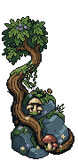
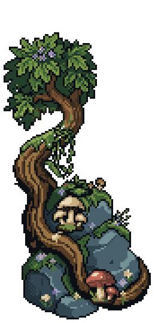
Connected stone/root corners with embedded mushrooms and moss, lower sweeping roots, hanging vines, flower growth and four restrained spirit lights. All source modules remain separate and editable.
The approved upper scene, separator, portrait, characters, playable board, board frame and bottom HUD are unchanged. These are actual Unity art-review captures with static actor/UI samples. No production gameplay integration or merge.
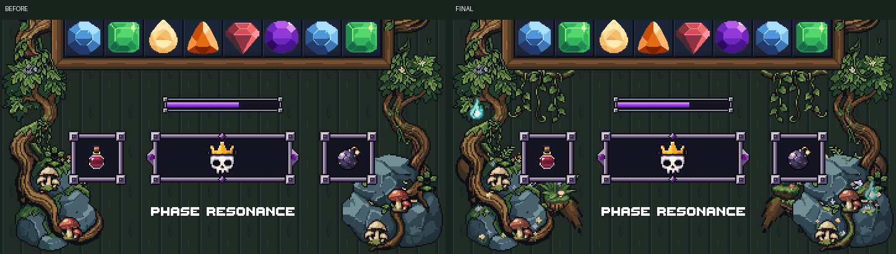
Final: all stages
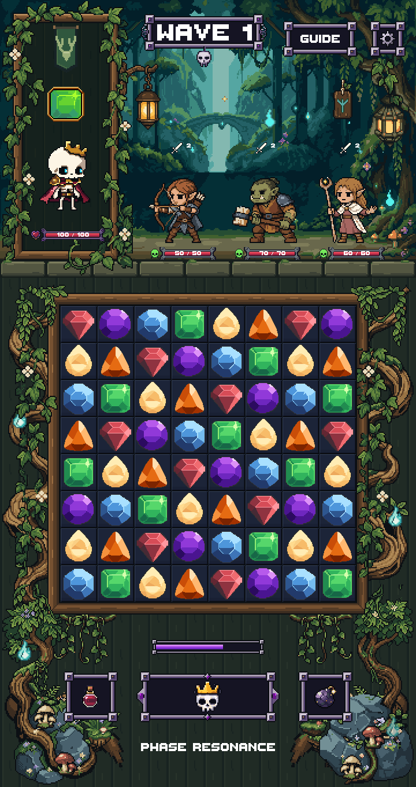
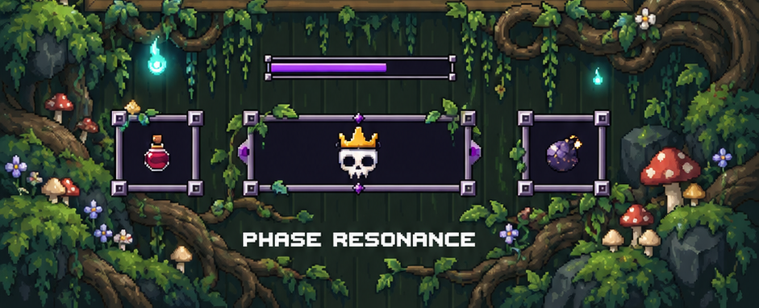
The target guides root flow, attached growth and framing. Existing shared HUD pixels and dimensions remain authoritative.
88×180 native · 31 opaque colors


88×180 native · 33 opaque colors
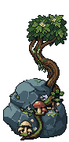
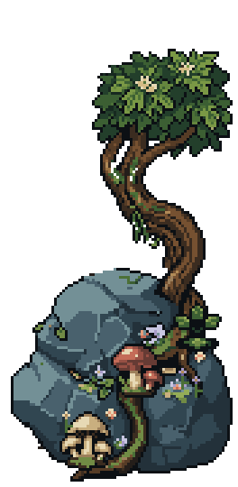
43×44 native · 17 opaque colors
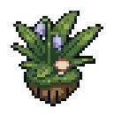
34×35 native · 18 opaque colors
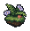
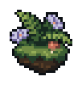
155×89 native · 17 opaque colors
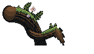
155×89 native · 17 opaque colors
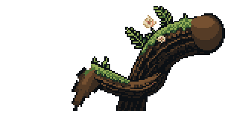
63×53 native · 15 opaque colors
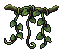
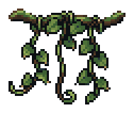
63×53 native · 15 opaque colors
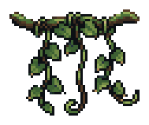
24×24 native · 4 opaque colors
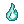
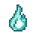
These are generation outputs before the LibreSprite cleanup shown above. Rejected studies remain in Raw/ for provenance.
88×124 native PixelLab output
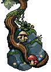
88×124 native PixelLab output
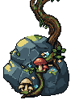
160×104 native PixelLab output
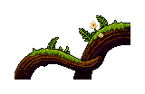
64×48 native PixelLab output
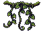
40×40 native PixelLab output
40×40 native PixelLab output
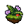
24×24 native PixelLab output
Unity compile and staged render tests passed. 720×1360 and 1440×2720 renders match exact pixel doubling. All nine LibreSprite sources reopen to identical PNGs; hard alpha and canvas clearance pass. Screenshot masks verify the locked upper area, board/frame and bottom controls/text. The six-second wisp loop closes; hovering is integer-native-pixel only and reduced motion is static.
PixelLab: 11 generations for this continuation; 20 debited across the latest six-stage polish pass, including the previously documented Stage 1 cancelled-job debit. No USD credits used.
Full report · Validation · Unity test results · Usage ledger
Finished and stopped for final visual review. Nothing merged.